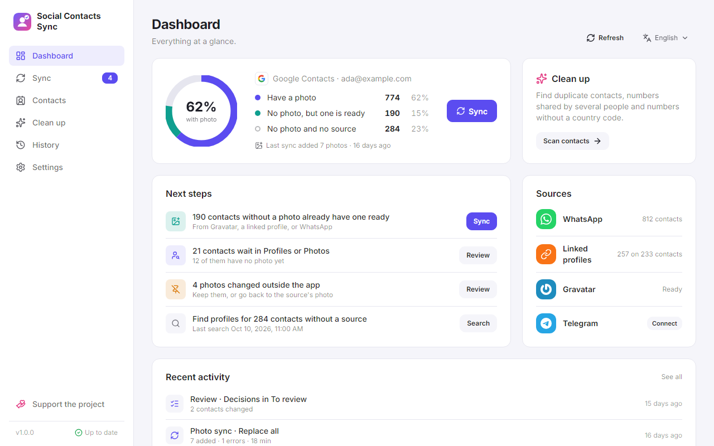
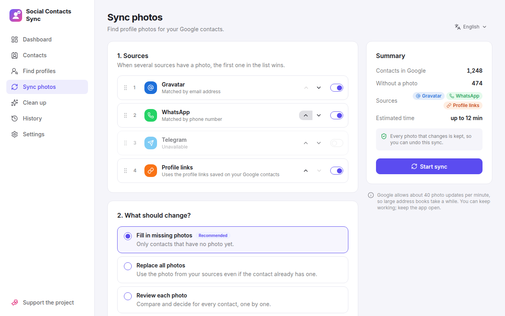
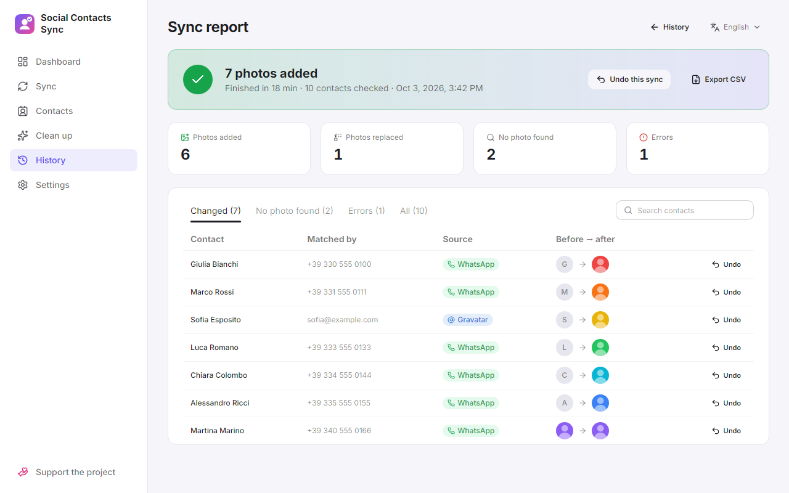
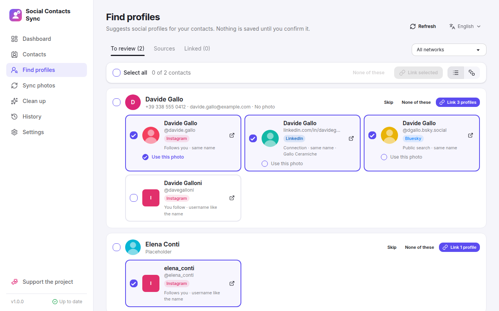
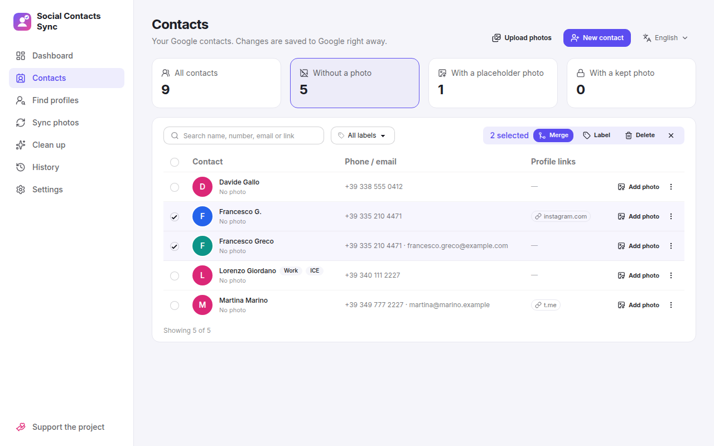
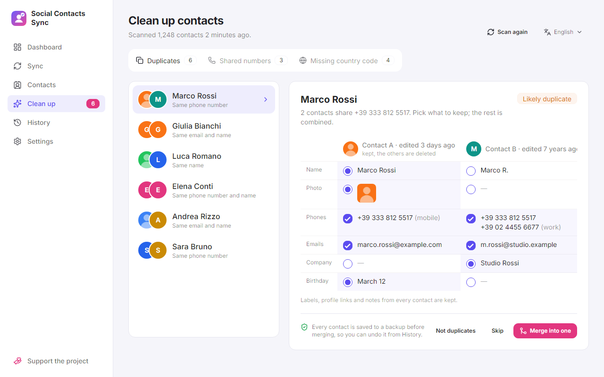
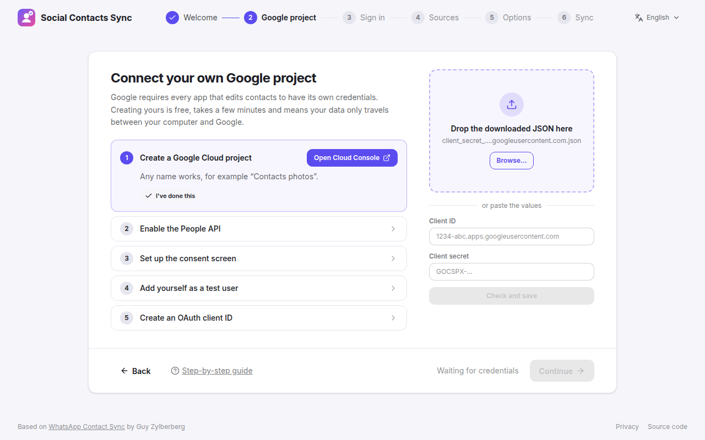

Give every contact a face. A desktop app that fills Google Contacts with your contacts'
profile photos from WhatsApp, Telegram, Gravatar and their social profiles, and tidies
up duplicates on the way.
These cards are contacts too. Most of them are a letter in a circle.
W
What it is
The address book problem
Most of the people in my phone have a WhatsApp photo, and in Google Contacts they are
all coloured circles with a letter. Social Contacts Sync matches each Google contact
to its WhatsApp and Telegram accounts by phone number, and to Gravatar by email
address, and puts the photo on the contact.
For the people who aren't on any of those, it can use the social profiles saved on a
contact, and it helps find them: it suggests Instagram, LinkedIn, Facebook, Bluesky,
Mastodon and GitHub profiles with the same name, and links the ones you confirm.
R
Runs on your computer
Windows, Linux, macOS
The app starts a small local server and opens it in its window, so your contacts only
travel between your computer, Google and the sources you connect. In English and
Italian, light or dark.
It grew out of
WhatsApp Contact Sync
by Guy Zylberberg. This fork adds the desktop app, more sources and the clean-up
tools, and keeps his licence.

The dashboard — how many contacts have a face.P
Photos from your sources
Feature
WhatsApp and Telegram, matched by phone number, Gravatar, matched by email, and the
profile links saved on a contact, in the order you choose. Telegram only reads the
contacts you already have there.
T
Three ways to sync
Feature
Fill in only the missing photos, replace them all, or review each contact and pick the photo with the keyboard.

Choose the sources, their order, and what should change.U
Reports and undo
Feature
Every sync keeps a report of what changed, with the photo before and after. Undo one contact or the whole run, and export it as CSV.

The report — before and after, with undo per contact.F
Find profiles
Feature
Suggests each contact's social profiles from your own Instagram and LinkedIn data
exports and a public search on Bluesky, Mastodon and GitHub. Review them one by one or
as a list. An experimental scan of your own followers is there too, off by default: it
goes against those sites' terms, and the app says so before it starts.

Tick the ones that are right, pick whose photo to use.C
Contacts
Feature
Every Google contact in one list: edit every field, add, merge, label and delete them,
and upload photos by hand. A kept photo is never replaced, and the contact can still
be linked to its profiles.

The ones still without a photo come first.D
Duplicates
Feature
Finds contacts that share a number, an email or a name, and merges them field by field. Google has no merge, so every contact is backed up first and the merge can be undone.

Pick each value, the rest is combined.S
Shared numbers
Feature
A number saved on two different people would put one person's photo on the other. Keep it on the right one, merge them, or mark it as shared so syncs skip it.
+
Country codes
Feature
Numbers saved without +39 or another prefix are listed with the fixed version, and fixed in one go.
G
Get it
From the releases page
The portable and AppImage builds need no installation and keep their settings next to themselves.
Windows
Portable .exe, or installer with automatic updates
Linux
.AppImage with automatic updates, or .deb
macOS
Universal .dmg
The installer and the AppImage download a new version by themselves and ask before
installing it. Automatic downloads can be turned off in Settings.
Google asks every app that edits contacts for its own credentials. Creating yours is
free and takes a few minutes; the app links each page of the Google Cloud Console and
checks the result. The builds are not code-signed yet, so Windows and macOS warn on
the first launch; the
README
says how to get past it.

The first-run wizard walks through your own Google project.P
Private by design
Nothing reaches me
There is no Social Contacts Sync service. Your Google sign-in is stored encrypted with
your system's keychain, and the app connects only to Google, WhatsApp Web, Telegram,
Gravatar (which receives a hash of each email address, not the address), the profile
pages saved on your contacts, the public search of Bluesky, Mastodon and GitHub when
you run it, and GitHub to check for updates. It can also run as a self-hosted web app,
from one Docker container.
O
Open and free — support it
Apache 2.0 with the Commons Clause
Free and open source, under the original project's licence. If it saved you an evening of copying photos, a donation is much appreciated.